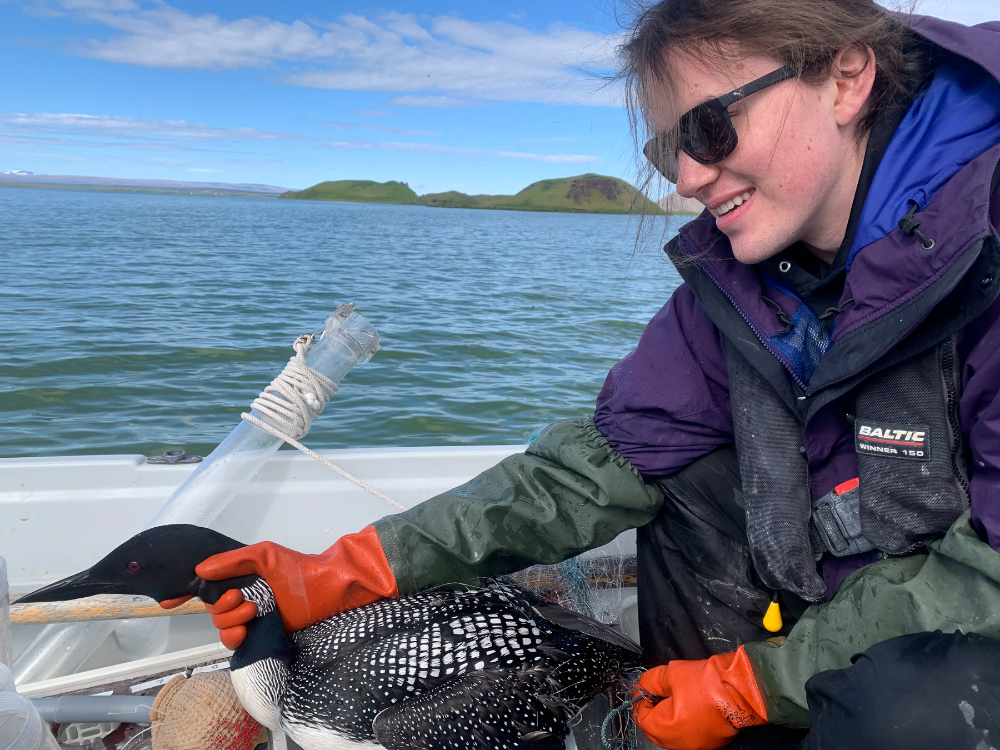

My first and only publication (thus far) was executed and written in 2021 with great support by my mentors Carissa Wonkka and Devan McGranahan. Published in 2023, we used three different time-since-fire gradients to examine the pyric herbivory patterns of grasshoppers. Further details of the two summers I spent in Montana can be found in my CV, and the full research article can be found here:
Grasshopper abundance and offtake increase after prescribed fire in semi-arid grassland
In the summer of 2022 I was the REU intern for the Ives Lab at the University of Wisconsin, Madison. The lab maintains a long term ecological research cite in the north of Iceland at Lake Mývatn. The lake is home to dozens of species of midge, including Tanytarsus gracilentus which has dramatic and acyclic abundance fluctuations. My personal project saught to determine the foraging preferences of an available midge species, Chironomus islandicus, through a series of feeding trials and foregut dissection and inspection.